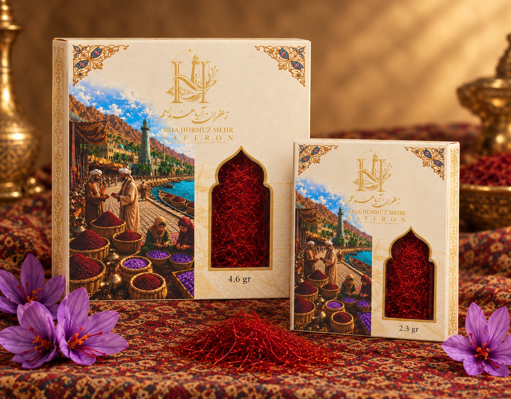
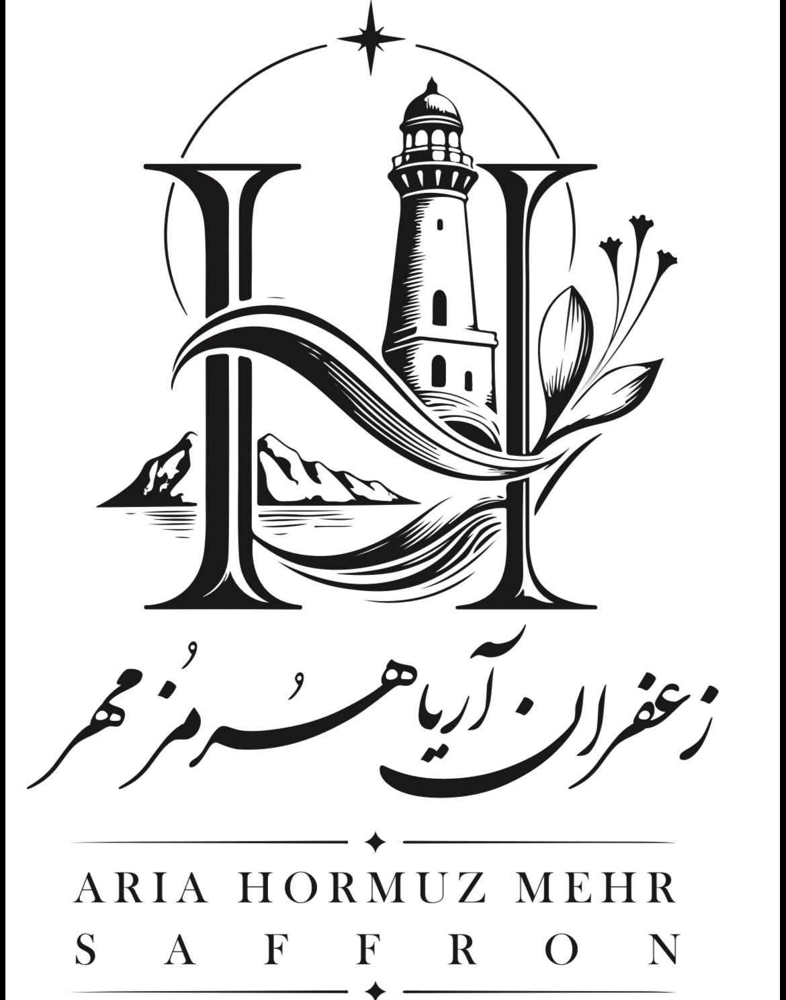
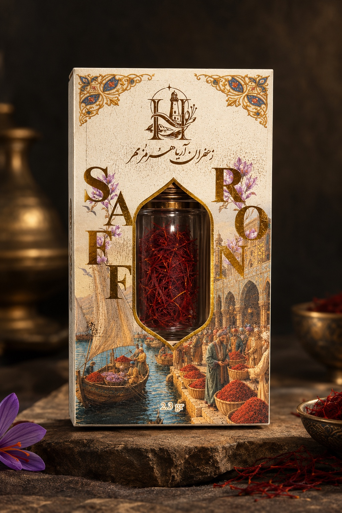

01 / LUXURYزعفران لوکس
یک مثقال · ۴٫۶ گرم

آریا هرمز مهرزعفران ایرانیمیراث سرزمین پارس
زعفران ایرانی، با الهام از تاریخ تجارت دریایی هرمز و هنر بستهبندی فاخر؛ برای برندها و بازارهایی که تفاوت را میشناسند.
از خاک ایران، برای جهان
هر رشته زعفران، بخشی از داستانی دیرینه است؛ داستانی از زمین، دقت و دادوستد. آریا هرمز مهر این میراث را با نگاهی معاصر و بستهبندیهایی الهامگرفته از معماری ایرانی و مسیرهای دریایی هرمز به بازارهای جهانی معرفی میکند.
تعهد ما به کیفیت↙هر بسته، پیوندی میان میراث ایرانی و سلیقه جهانی.
انتخابی برای هر بازار
از بستهبندی هدیهمحور و لوکس تا قالبهای مناسب خردهفروشی؛ طراحی هر مجموعه با حفظ هویت مشترک برند انجام شده است.

01 / LUXURYیک مثقال · ۴٫۶ گرم

02 / LUXURYنیم مثقال · ۲٫۳ گرم
یک مثقال · ۴٫۶ گرم
نیم مثقال · ۲٫۳ گرم
یک گرم
نیم گرم
تصاویر محصولات در این نسخه صرفاً برای نمایش هویت بصری هستند؛ تصاویر نهایی هر SKU پس از تأیید بستهبندی جایگزین میشوند.
کیفیت، یک تعهد روزمره
در تجارت بینالمللی، اعتماد با شفافیت در مشخصات محصول، کنترل کیفیت، قابلیت رهگیری و مستندات درست ساخته میشود. ما به دنبال ایجاد فرایندهایی همسو با الزامات بازار مقصد و استانداردهای مرتبط هستیم.
شفافیت مشخصات و وزن خالص
کنترل کیفیت و قابلیت رهگیری
آمادگی برای مستندات صادراتی
همکاری تجاری
برای دریافت اطلاعات محصولات، بررسی همکاری صادراتی یا گفتوگو درباره سفارشهای عمده با ما در تماس باشید.